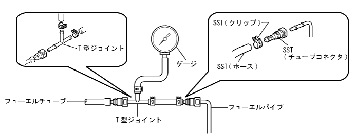

Fuel (2AZ-FE) Function Inspection |
| 1. Fuel Spill Prevention Procedure |
Remove the rear floor service hole cover. (Drive Type FF)
Remove the rear floor service hole cover. (Drive Type 4WD)
 |
Disconnect the fuel pump connector from the fuel suction tube assembly.
Start the engine.
After the engine stops by itself, turn the IG OFF.
Crank the engine again and check that it does not start.
Remove the fuel tank cap and release the pressure in the fuel tank.
Disconnect the cable from the negative (-) battery terminal.
For the procedure, seeReference
Connect the fuel pump connector to the fuel suction tube assembly.
Install the rear floor service hole cover with new butyl tape. (Drive Type FF)
Install the rear floor service hole cover with new butyl tape. (Drive Type 4WD)
| 2. Fuel Pressure Inspection |
Perform the fuel spill prevention procedure. (For the procedure, see "1. Fuel Spill Prevention Procedure")
Remove the fuel pipe clamp.
Disconnect the fuel tube. (For precautions,)
Connect SST and the gauge.

Wipe off any spilled gasoline with a shop rag or similar.
Connect the battery negative terminal.
Connect SST (TaSCAN) to DLC3.
Operate the fuel pump following the screen display and measure the fuel pressure. (For the procedure, see "3. Fuel Pump Operation Inspection and Fuel Leak Inspection")
Disconnect SST (TaSCAN) from DLC3.
Start the engine.
Measure the fuel pressure at idle.
After disconnecting the cable from the negative battery terminal, remove SST and the fuel tube connector.
Connect the fuel tube. (For precautions,)
Connect the fuel pipe clamp.
| 3. Fuel Pump Operation Inspection and Fuel Leak Inspection |
Fuel Pump Operation Check
Connect SST (TaSCAN) to DLC3.
Operate according to the screen display, select 'Active Test' - 'Circuit Relay' - 'ON', and check the fuel pump operation.
Fuel Leak Inspection
Check that there are no fuel leaks in the fuel system while fuel pressure is applied.
| 4. Power Balance (Injection Cut) Active Test |
Connect SST (TaSCAN) to DLC3.
Start the engine, display the "Active Test" screen following the screen display, select "Power Balance", and perform one of "#1-#4".
Check the idle condition after injection is cut for the cylinder tested.